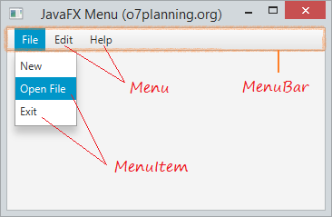
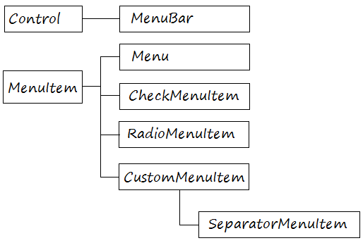
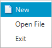
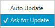
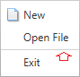
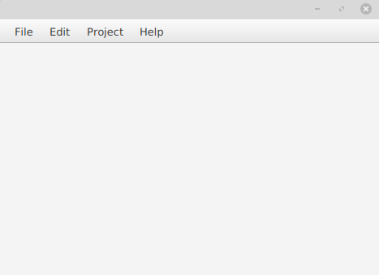

Anem a explicar com crear menús i barres de menú, agregar elements de menú, agrupar els menús en categories, crear submenús i establir menús contextuals.
Pot usar les següents classes de la API JavaFX per a crear menús en la seua aplicació JavaFX.
Les parts d’un menú són les següents:

Menú Items:

Menú Item

CheckMenuItem
RadioMenuItem

SeparatorMenuItem

Anem a explicar com es realitza un menú que conte tots els elements explicats anteriorment. Gran part de l’explicació, es podria fer directament en SceneBuilder:

MenuBar menuBar = new MenuBar();
Menu fileMenu = new Menu("File");
Menu editMenu = new Menu("Edit");
Menu projectMenu = new Menu("Project");
Menu helpMenu = new Menu("Help");
MenuItem newItem = new MenuItem("New");
newItem..setGraphic(new ImageView("icons/new.png"));
newItem.setGraphic(new ImageView(newImage));
MenuItem openFileItem = new MenuItem("Open File");
SeparatorMenuItem separator= new SeparatorMenuItem();
MenuItem exitItem = new MenuItem("Exit");
MenuItem copyItem = new MenuItem("Copy");
MenuItem pasteItem = new MenuItem("Paste");
CheckMenuItem buildItem = new CheckMenuItem("Build Automatically");
Image buildImage = MyImageUtils.getImage("/org/o7planning/javafx/icon/build-16.png");
buildItem.setGraphic(new ImageView("icons/build.png"));
buildItem.setSelected(true);
ToggleGroup group = new ToggleGroup(); updateItem1.setToggleGroup(group); updateItem2.setToggleGroup(group); updateItem1.setSelected(true);
- Afegir menuItems al Menus
fileMenu.getItems().addAll(newItem, openFileItem,separator, exitItem); editMenu.getItems().addAll(copyItem, pasteItem); projectMenu.getItems().add(buildItem);
helpMenu.getItems().addAll(updateItem1,updateItem2);
- Afegir els menus al MenuBar
menuBar.getMenus().addAll(fileMenu, editMenu, projectMenu, helpMenu);
## Menú Contextual
ContextMenu es pot associar amb controls com a etiquetes, camps de text, etc. El menú contextual s'activa en fer clic dret sobre els controls associats. Mostra una finestra emergent que conté diversos elements de menú o submenú.
El ContextMenu és bastant similar a un Menú, pot afegir elements amb tipus de MenuItem, CheckMenuItem, RadioMenuItem o SeparatorMenuItem.
Els constructors de la classe són:
- ContextMenu (): crea un nou menú contextual buit.
- ContextMenu (MenuItem ... i): crea un menú contextual que conté els elements del menú.
Mètodes d'ús comú:
- **getItems()**: retorna els elements del menú contextual
- **getOnAction()**: retorna el valor de la propietat OnAction
- **hide()**: oculta el menú contextual
- **setOnAction(EventHandler v)**: estableix el valor de la propietat onAction
- **show(Node a, doble X, doble I)**: mostra el menú contextual en una posició específica de la pantalla
## Creació del menú contextual.
Anem a basarnos en l'exemple que veiem en la imatge.

- Creació de menú Contextual
contextMenu.getItems().addAll(menuItem1, menuItem2);
// Creem el event d’acció per que canvie el text del label
menuItem1.setOnAction(new EventHandler
- afegim els menus Item
contextMenu.getItems().addAll(menuItem1, menuItem2); ~~~
circle.setOnContextMenuRequested(new EventHandler